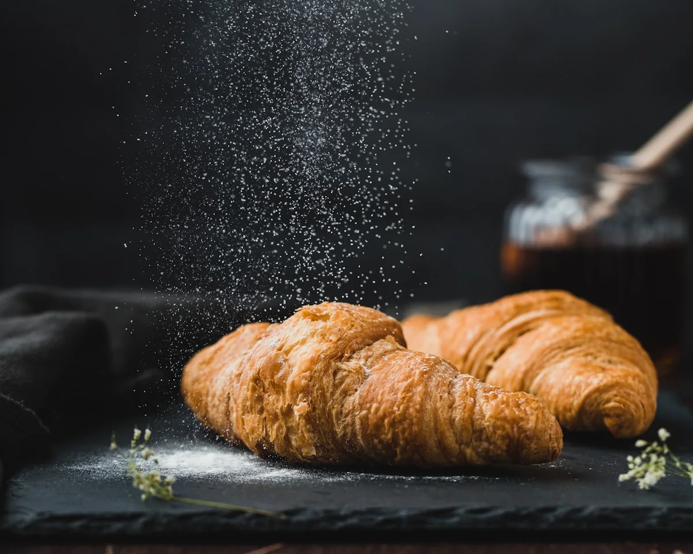
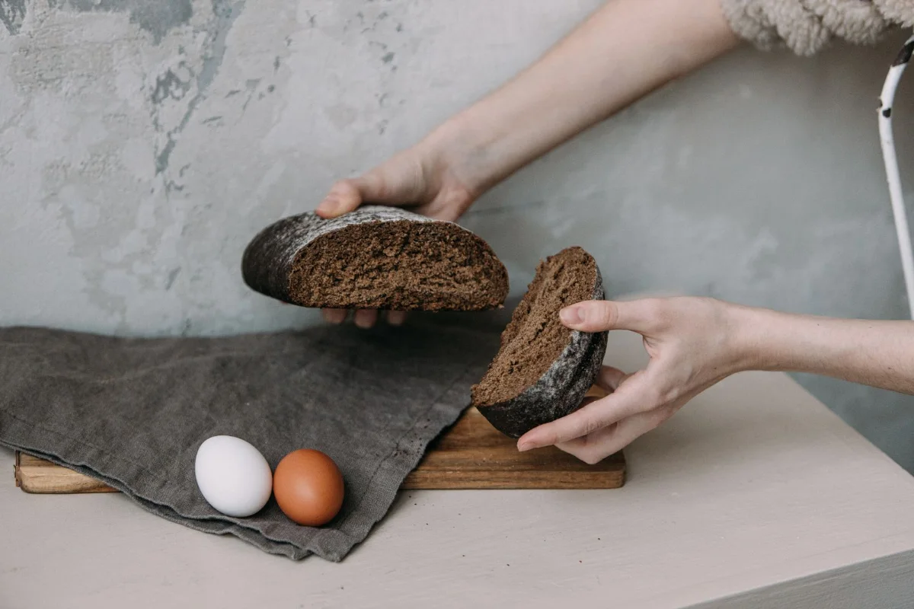
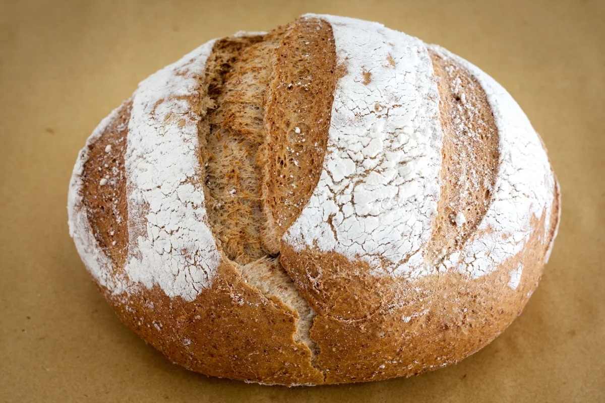

Your product. Our practical expertise.
25 years in food technology. Working alongside producers to improve products, refine processes and bring new ideas to life.
Explore servicesSpecialist knowledge. Practical results.

KIDEX DOOEL is a consulting company specialized in the overall technology of wheat and flour processing, bakery products, confectionery and pasta production.
The company has extensive practical experience, with 25 years in these industries and a large number of successful projects with companies in North Macedonia and across the region.
KIDEX participates in fairs, seminars and trainings where it presents its experience, successful projects and innovations in the fields in which it specializes.
Its work covers the overall technology of wheat and flour processing, bakery products, confectionery and pasta production, including the technology, equipment and quality control behind those products.
Call us and let us make it a success together.
Better products, built together.
Practical support at every step, from understanding your product to making it work on the line.
-
Understand
Look closely at your ingredients, process and product to find what can improve.
-
Refine together
Work with your team to develop recipes and fine-tune the way you produce.
-
Put it to work
Move forward with a practical recipe, formulation or process your team can use.
Quality is built into every stage.

Ingredients
Understand the flour, grain and raw materials behind your product.
Process
Refine the recipe and the way it runs on your production line.
Finished product
Bring quality, taste and consistency together in the final result.
Let's improve your next product.
Tell us what you're making and what you'd like to improve.